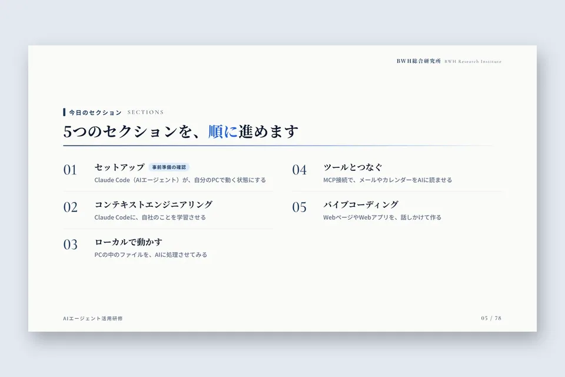
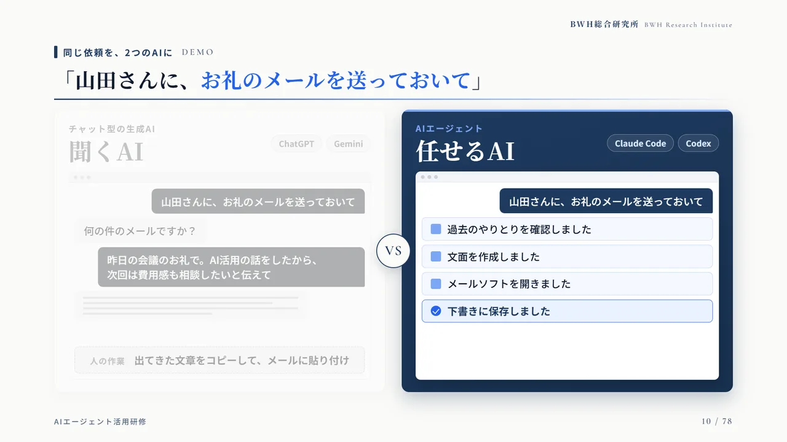
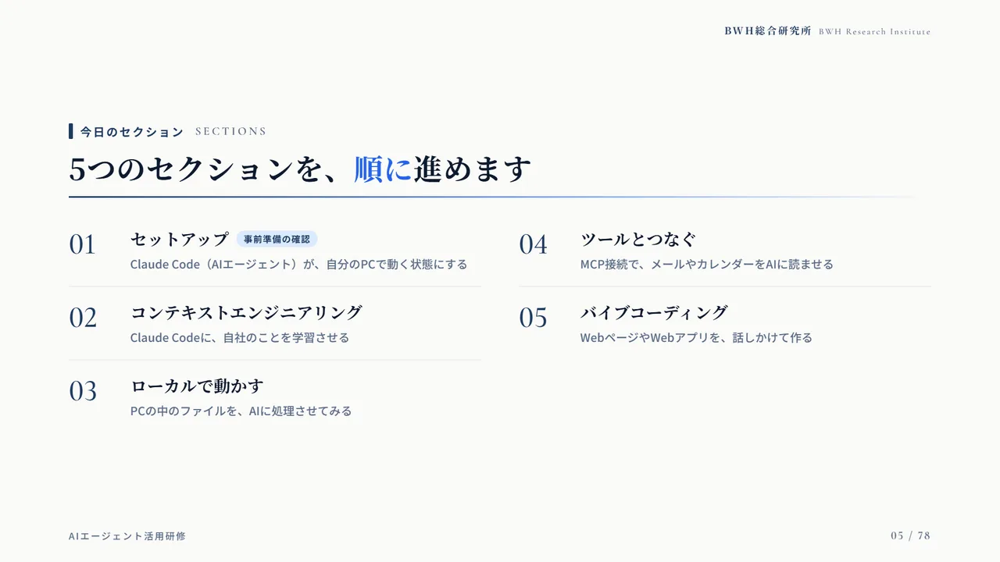
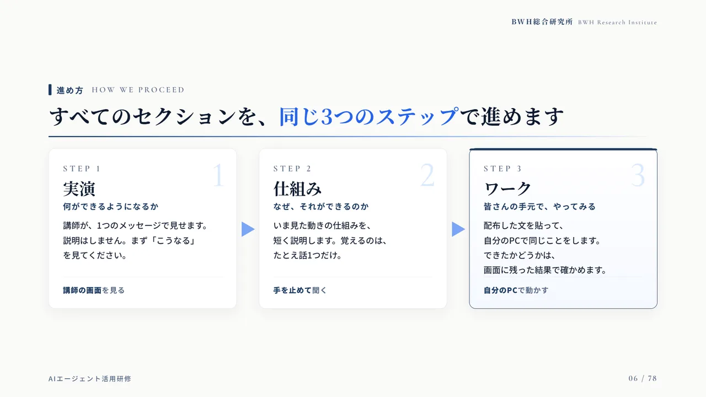
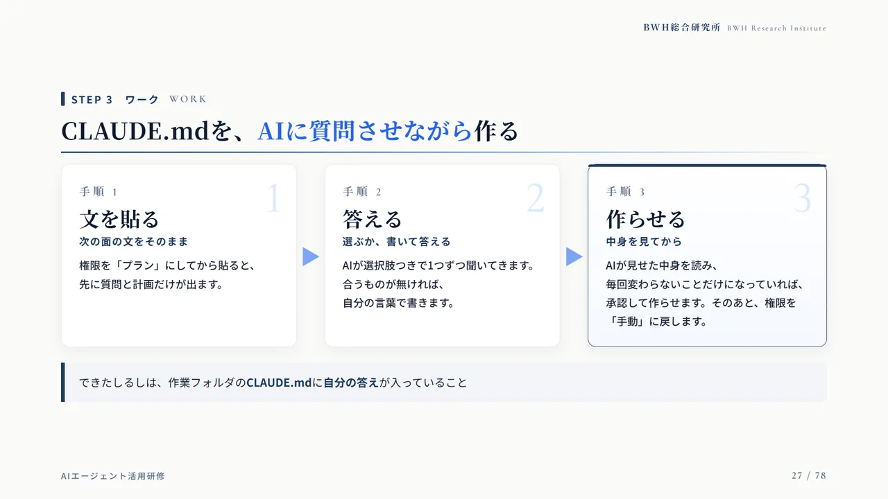
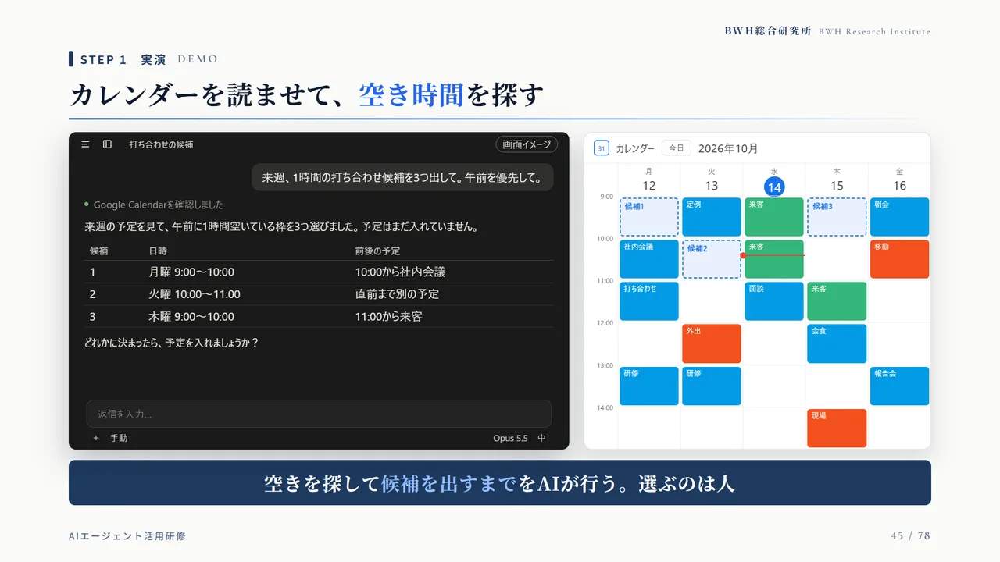
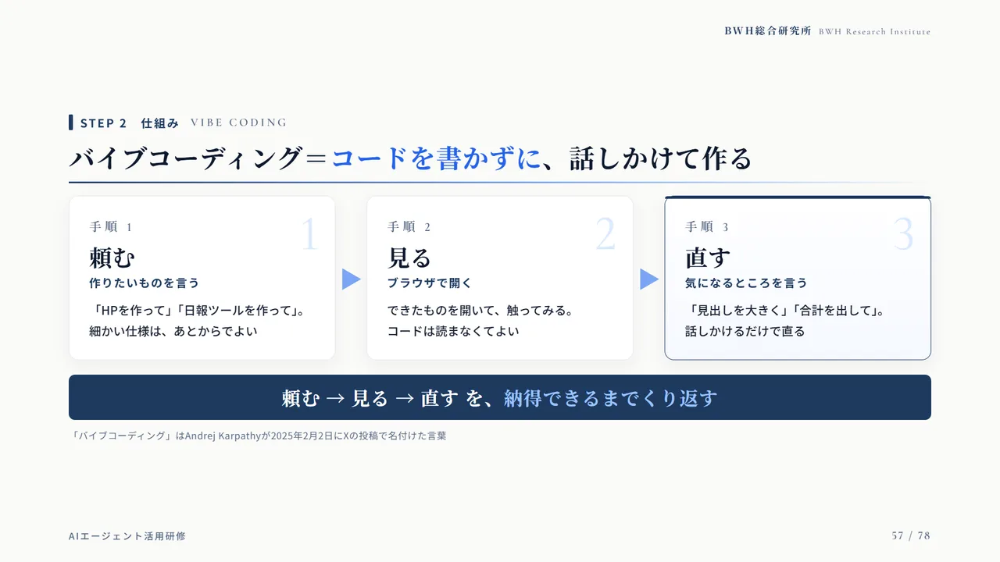
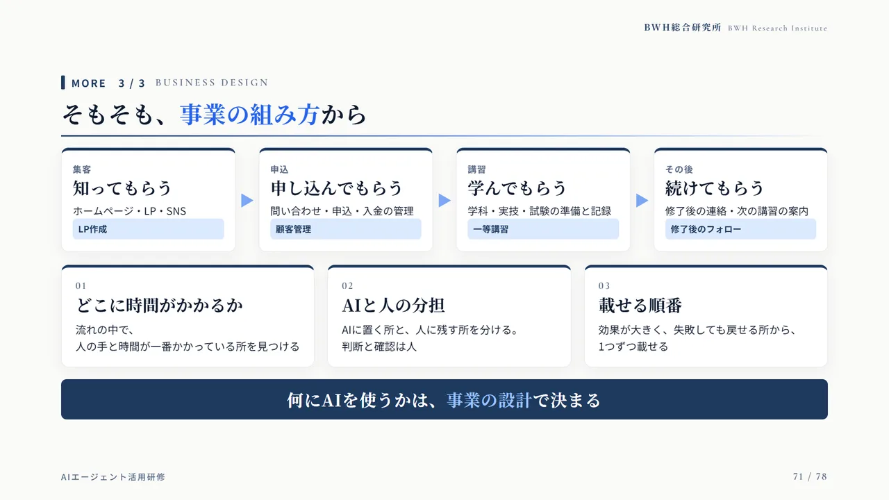

むげんのそら｜AIエージェント集中研修（2026年10月）

AIを社内に広げるとき、最初の一歩を誰が踏み出すか。鯖江市のむげんのそらは、AI導入を担うメンバーが先に学び、社内の先生役になる道を選びました。2026年10月に行った3時間の集中研修の中身と、研修のあとに起きた変化をまとめます。
PROFILEむげんのそら
- 実施日
- 2026年10月5日（月）15:00〜18:00
- 場所
- 福井県鯖江市
- 対象
- 社内でAI導入を担うメンバー
- 形式
- 各自のPCで手を動かす実習（3時間）
この事例のポイントAI導入を担うメンバーが、3時間の実習で、自分のPCからAIエージェントを動かしました。受講者からは、できることがもっと広がりそうだという声が多く上がりました。研修のあと社内にタスクフォースができ、既存業務のAI化が動き出しています。
01研修のきっかけ
むげんのそらは、福井県鯖江市を拠点に、合宿型のドローン国家資格スクールを全国で運営しています。新しい事業を進めるなかで、AIを使いこなせる人を社内に増やしたいという相談をいただきました。
社内では、まずAI導入のチームが学び、そのチームが社内の先生役になって事業部へ広げる、という方針が決まっていました。そこで研修は、受講者が自分のPCで手を動かす実習として組みました。

02研修のゴール：「AIに聞く」から「AIに任せる」へ
チャットで質問して答えをもらう使い方から、作業そのものをAIに任せる使い方へ。研修のゴールは、AIエージェントに仕事を任せる働き方を、自分のPCで始められるようになることです。
たとえば「お礼のメールを送っておいて」と頼んだとき、チャット型のAIは文面を返すだけです。AIエージェントは、過去のやりとりを確かめ、文面を作り、下書きに保存するところまで進めます。

033時間を、5つのセクションに分ける
研修は5つのセクションで組みました。途中に10分の休憩をはさみ、1つのセクションでできるようになったことを、次のセクションで使う順番にしています。
- 01 セットアップAIエージェント（Claude Code）が、自分のPCで動く状態にする
- 02 コンテキストエンジニアリング会社の前提やルールを、AIに覚えさせる
- 03 ローカルで動かすPCの中のファイルを、AIに整理させる
- 04 ツールとつなぐメールやカレンダーとつなぎ、下書きや日程の案をAIに作らせる
- 05 バイブコーディングWebページや社内の道具を、話しかけて作る

04どのセクションも、同じ3つのステップで
各セクションは「実演 → 仕組み → ワーク」の3つのステップで進めました。まず講師が1つの指示で何ができるかを見せ、次になぜそれができるのかを短く説明し、最後に受講者が自分のPCで同じことをやってみます。
説明を先に長くすると、手を動かす前に疲れてしまいます。先に結果を見せることで、「自分もやってみたい」という状態からワークに入れます。

05会社のことを、AIに覚えさせる
2つ目のセクションでは、会社の前提やルールを書いたファイル（CLAUDE.md）を作りました。AIは優秀でも、会社に初めて来た新人と同じで、社内の事情を知りません。毎回同じ説明をしなくて済むように、事業の内容、言葉づかい、やってはいけないことをファイルにまとめておきます。
ファイルは、AIに質問させながら作ります。AIが事業の内容や言葉づかいを順に質問し、受講者が答えると、AIがファイルにまとめていきます。

06メールとカレンダーをつなぐ
4つ目のセクションでは、AIエージェントをGmailとGoogleカレンダーにつなぎました。受信したメールを読ませて返信の下書きを作る、カレンダーを読ませて空いている時間を探して示す、といった作業を、受講者がそれぞれ試しました。
AIが受け持つのは、読む、まとめる、下書きを作るところまでです。送るかどうか、どの日程にするかを選ぶのは人です。

07話しかけて、道具を作る
最後のセクションは、バイブコーディングです。コードを書かずに、「こういう画面がほしい」と話しかけて、Webページや社内の小さな道具を作ります。頼む、見る、直すをくり返し、納得できるまで仕上げます。
ワークの題材には、講習の案内や受講者への連絡など、むげんのそらの実際の業務に近い例を使いました。

08受講者の反応
受講者からは、できることがもっと広がりそうだという声が多く上がりました。
AIでできることが、もっと広がりそう。
受講者の声（要旨）
09その後：タスクフォースで既存業務のAI化へ
研修のあと、社内にタスクフォースが結成され、既存業務のAI化を進めることになりました。BWHは、そのタスクフォースに随時アドバイスをしながら伴走していきます。
研修の終盤では、集客、申し込み、講習、その後のフォローという事業の流れに沿って、どこにAIを載せるかを考える面も用意しました。何にAIを使うかは、道具より先に、事業の設計で決まるからです。

10この事例から見えたこと
研修を「受けて終わり」にしないためには、終わったあとに動く体制を社内に作ることが大切です。むげんのそらでは、研修を受けたメンバーがそのまま推進役になりました。
11同じ研修を受けるには
AI よろづやの現場AI研修は、御社の実際の業務を題材に、受講者が自分のPCでAIエージェントを動かす実務研修です。
人数、受講する方の職務、題材にしたい業務を伺ってから、研修の時間と進め方を一緒に決めます。研修のあとに、業務への組み込みを伴走でお手伝いすることもできます。
よくある質問
PCに詳しくない社員でも受けられますか？
受けられます。事前にセットアップの手順書をお送りし、当日は最初の時間で、全員のPCでAIエージェントが動く状態にしてから進めます。
社内の情報をAIに読ませても大丈夫ですか？
研修の最初に、使うアカウントの種類と設定、AIに読ませてよい情報の範囲を確かめます。社内のルールが決まっていない場合は、ルールづくりからお手伝いします。
研修のあとも、相談できますか？
できます。むげんのそらでは、研修のあとにできたタスクフォースに、随時アドバイスをしながら伴走しています。
助成金は使えますか？
提携の社会保険労務士と連携し、人材開発支援助成金などを使えるかどうかを、研修の内容を決める段階から一緒に確かめます。条件は会社の状況によって変わります。
使ったもの
- Claude（チーム向けプラン）
- Claude Code
- Gmail・カレンダーとの連携
- セットアップ手順書
担当したAI社員
 一乗谷 アヤ研修の担当（AI社員）
一乗谷 アヤ研修の担当（AI社員） 九頭竜 ソラAX推進のコンサルタント（AI社員）
九頭竜 ソラAX推進のコンサルタント（AI社員）